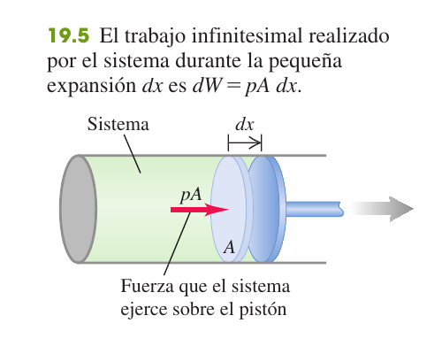
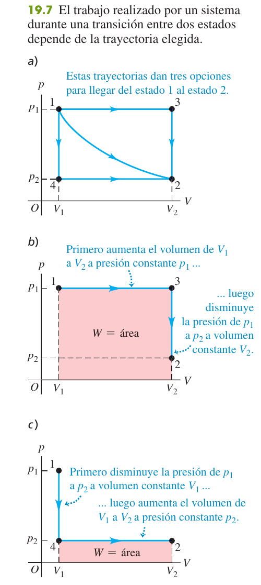
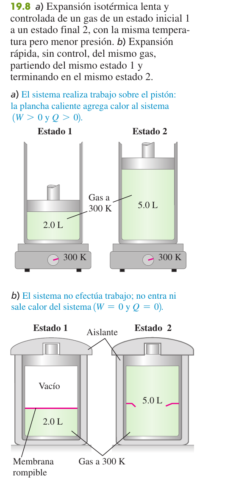
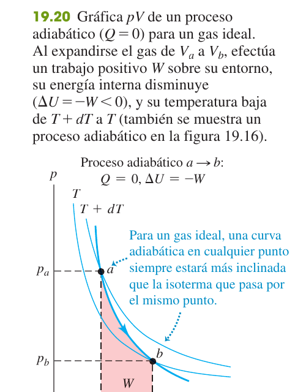
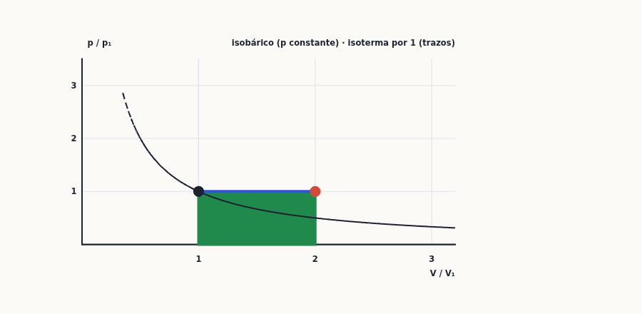
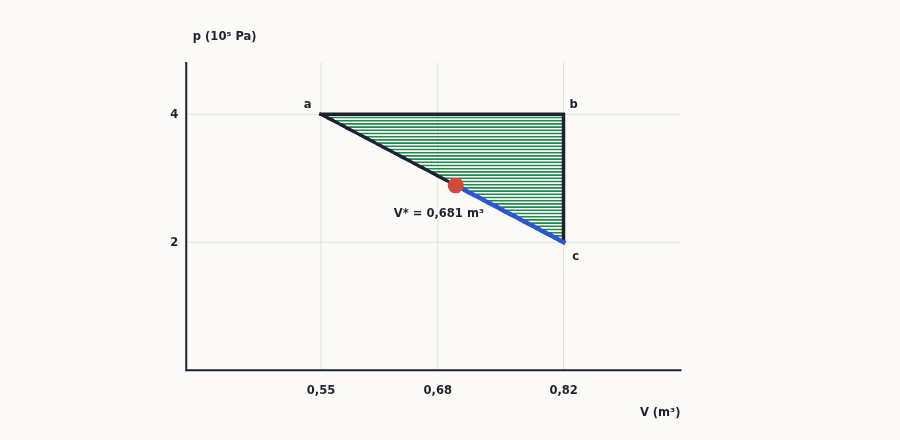

Primera ley de la termodinámica
La conservación de la energía aplicada al calor: cuánto trabajo hace un gas al cambiar de volumen (el área bajo la curva $pV$), por qué el calor y el trabajo dependen del camino pero la energía interna no, y cómo se resuelven los cuatro procesos clásicos (isóbaro, isócoro, isotermo y adiabático) y los ciclos de gas ideal que caen en examen una y otra vez.
0Antes de empezar U p.618
Prerrequisitos: (1) trabajo y energía (temas 6-7): $W=\int F\,dx$ y conservación de la energía; (2) calor, calor específico y calor latente (tema 17): $Q=mc\,\Delta T$ y $Q=mL$; (3) gas ideal (tema 18): $pV=nRT$, $C_V=\tfrac32R$ (monoatómico) y $\tfrac52R$ (diatómico), $T$ siempre en kelvin y presión absoluta; (4) un poco de cálculo: integrar $\int dV/V=\ln V$ y potencias.
Mapa del tema (sigue el orden de U): 19.1 sistemas termodinámicos y convención de signos; 19.2 trabajo al cambiar el volumen ($W=\int p\,dV$); 19.3 trayectorias entre estados; 19.4 energía interna y primera ley $\Delta U=Q-W$; 19.5 tipos de procesos (adiabático, isocórico, isobárico, isotérmico); 19.6 energía interna del gas ideal; 19.7 capacidades caloríficas $C_V$, $C_p$ y $\gamma$; 19.8 proceso adiabático del gas ideal ($pV^\gamma=$ cte). Después, un apartado de método para ciclos de gas ideal (§9), las cuestiones de teoría (§10) y los ejercicios (§11).
Hay 10 problemas de examen real cuyo cálculo central es la primera ley y la termodinámica del gas ideal (cuatro son primera ley y procesos sin ciclo, X1–X4; los otros seis son ciclos cuya eficiencia se termina en el tema 20) y 3 preguntas de teoría. Todos están resueltos en §11.1 y §10. No cae nada de «aprender fórmulas»: cae una tabla de $Q$, $W$ y $\Delta U$ por tramos.
| Convocatoria y pregunta | De qué va | Dónde |
|---|---|---|
| Examen Febrero 2024 (2ª semana) P-2 | Dos trayectorias $abc$ y $adc$ entre dos estados: calor en cada tramo (primera ley, sin gas ideal) | §11.1, X1 |
| Examen Febrero 2022 (1ª semana) P-2 | Compresión adiabática de gas monoatómico: $p_2$, $W$, $T_2/T_1$ | §11.1, X2 |
| Examen Septiembre 2019 (Reserva) P-2 | Trabajo de una expansión adiabática reversible de 3 L al triple | §11.1, X3 |
| Examen Septiembre 2019 (Original) P-2 | Dos gases separados por un pistón conductor en un cilindro aislado | §11.1, X4 |
| Examen Febrero 2019 (1ª semana) P-1 | Ciclo ABCA de un mol de gas monoatómico (isóbara, isócora, isoterma) | §11.1, X5 |
| Examen Febrero 2023 (2ª semana) P-2 | Máquina térmica: isócora, isoterma e isóbara con 3 mol | §11.1, X6 |
| Examen Septiembre 2024 P-2 | Ciclo con 1,5 mol de helio: isócora, isoterma e isóbara | §11.1, X7 |
| Examen Febrero 2025 (2ª semana) P-2 | Ciclo isóbaro–isócoro–recta, gas monoatómico | §11.1, X8 |
| Examen Febrero 2025 (1ª semana) P-2 | Refrigerador con gas diatómico: isoterma, isócora, isóbara | §11.1, X9 |
| Examen Febrero 2019 (2ª semana) P-2 | Ciclo de 1 kg de aire con dos adiabáticas | §11.1, X10 |
| Examen Febrero 2018 (1ª sem.) P-3 (3.1); Febrero 2020 (1ª sem.) P-3 (3.2); Febrero 2023 (1ª sem.) P-4 (B) | Teoría (4 puntos): «Primera ley de la termodinámica» / «Energía interna y primera ley»; en 2023 con dos cuestiones | §10, T1 |
- Dibuja el diagrama $pV$ con los estados y flechas (sentido horario o antihorario) antes de calcular nada.
- Una tabla de $Q$, $W$ y $\Delta U$ por cada tramo (Estrategia 19.1, U p. 626): $W$ = área bajo el tramo ($0$ si es vertical); $\Delta U$ de los datos de $U$ o, para gas ideal, de $nC_V\Delta T=\tfrac{C_V}{R}\Delta(pV)$; y $Q=\Delta U+W$ (19.5).
- Comprueba el ciclo: $\sum\Delta U=0$ y $W_{neto}=\sum Q$.
- Signos: $Q>0$ entra calor; $W>0$ el gas empuja al entorno (se expande).
- Gas ideal sin $n$: trabaja con $pV$ (no hace falta $n$ ni $T$). Temperaturas en kelvin en cualquier potencia o cociente.
- Adiabático: $pV^\gamma$, $TV^{\gamma-1}$ y $W=(p_1V_1-p_2V_2)/(\gamma-1)$; $Q=0$ y no se dibuja con la fórmula de la isoterma.
1Sistemas termodinámicos U p.618-619
La termodinámica se pregunta: ¿a dónde va la energía? Pones un gas en un cilindro con pistón. Si lo calientas, el gas se hincha y empuja el pistón: parte de la energía que le diste como calor se convierte en trabajo mecánico (el motor de un coche o una locomotora de vapor hacen exactamente eso), y el resto se queda dentro del gas, haciendo que sus moléculas se muevan más deprisa. Piensa en una cuenta bancaria: el saldo es la energía interna $U$; el calor que entra es un ingreso; el trabajo que el gas hace sobre el entorno es un gasto. La primera ley dice que el saldo cambia exactamente en ingresos menos gastos.
U p.618Un sistema termodinámico es cualquier conjunto de objetos que decidimos estudiar (el gas del cilindro, el agua de una olla); todo lo demás es el entorno. Un estado queda descrito por variables como $p$, $V$, $T$ y $n$ (tema 18). Un proceso termodinámico es un cambio de un estado a otro; cuando el sistema intercambia energía con el entorno, lo hace por calor $Q$ (transferencia por diferencia de temperatura) o por trabajo $W$ (cambio de volumen o fuerzas mecánicas).
U p.618-619$Q>0$: entra calor al sistema. $Q<0$: sale calor. $W>0$: el sistema hace trabajo sobre el entorno (se expande). $W<0$: el entorno hace trabajo sobre el sistema (se comprime).
U p.619En mecánica (tema 6) el trabajo positivo es el que se hace sobre el cuerpo; aquí $W>0$ es el trabajo hecho por el sistema. Por eso la primera ley llevará un signo menos ($\Delta U=Q-W$). Decide la convención al empezar y no la cambies a mitad de problema.
U p.6192Trabajo realizado al cambiar el volumen U p.620-622
Cuando el gas empuja el pistón y este se desplaza, el gas hace trabajo: fuerza por distancia. Como la fuerza es presión por área, $F\,dx=pA\,dx=p\,dV$: el trabajo es la presión multiplicada por el volumen que se «barre». Si el gas se expande, entrega energía al entorno ($W>0$); si lo comprimimos, la recibe ($W<0$). Si el volumen no cambia, no hay trabajo, por mucho que suba la presión.
U p.620
$$dW=p\,dV\qquad(19.1)\qquad\qquad W=\int_{V_1}^{V_2}p\,dV\qquad(19.2)$$ Para un cambio finito hay que saber cómo varía $p$ con $V$ durante el proceso. En un diagrama $pV$, $W$ es el área bajo la curva entre $V_1$ y $V_2$. A presión constante: $W=p\,(V_2-V_1)$ (19.3).
U p.620-621Un gas ideal se expande a $T$ constante de $V_1$ a $V_2$. En el proceso $p$ no es constante, pero $p=nRT/V$ (18.3); sacamos las constantes de la integral:
- $W=\displaystyle\int_{V_1}^{V_2}p\,dV=\int_{V_1}^{V_2}\frac{nRT}{V}\,dV=nRT\int_{V_1}^{V_2}\frac{dV}{V}$.
- $\boxed{W=nRT\ln\dfrac{V_2}{V_1}=nRT\ln\dfrac{p_1}{p_2}}$ (en la segunda forma se usó $p_1V_1=p_2V_2$).
- Signo: si $V_2>V_1$ el logaritmo es positivo (expansión, $W>0$); si $V_2<V_1$ es negativo (compresión, $W<0$). $T$ en kelvin.
Con presión en Pa y volumen en m³ el trabajo sale en julios. Si trabajas con litros y atmósferas: $1\ \text{L}\!\cdot\!\text{atm}=101{,}3$ J. Si el problema da $p_1V_1$ en L·atm y piden J, multiplica al final. Nunca mezcles $R=8{,}314$ J/(mol·K) con litros.
PCalcular el trabajo como $p\,\Delta V$ en un proceso en el que la presión no es constante (isotermo, adiabático, una recta oblicua): en esos casos hay que integrar o tomar el área de la figura (trapecio, rectángulo, triángulo). Y recuerda: en un tramo vertical ($V$ constante) el trabajo es cero.
P3Trayectorias entre estados termodinámicos U p.622-623
Ir de Madrid a Barcelona por carretera o por autopista: el punto de partida y el de llegada son los mismos, pero los kilómetros recorridos y el combustible gastado no. El trabajo y el calor son como el combustible: dependen de el camino que sigue el gas en el diagrama $pV$, no solo de los estados inicial y final. Más adelante veremos que hay una cantidad que sí depende solo de los extremos: la energía interna.
U p.622-623
«El trabajo realizado por el sistema depende no solo de los estados inicial y final, sino también de los estados intermedios, es decir, de la trayectoria.» No tiene sentido hablar del «trabajo contenido en un sistema». Si el proceso es un ciclo (vuelve al estado inicial), el trabajo neto es el área encerrada por la curva: positivo si se recorre en sentido horario, negativo si antihorario.
U p.622-623
Con los mismos estados 1 y 2 de la figura, en (a) entra calor y el gas hace trabajo; en (b) no hay calor ni trabajo. Por eso no existe «el calor contenido en un cuerpo»: el calor es energía en tránsito, no una propiedad del estado.
U p.623Decir «el gas tiene $Q$ julios de calor» o «el gas tiene $W$ julios de trabajo». Solo se puede decir cuánto se transfiere en un proceso concreto.
P4Energía interna y primera ley de la termodinámica U p.623-628
La energía interna $U$ es la «caja fuerte» de energía de un sistema: la suma de las energías cinéticas de todas sus moléculas (que se agitan, giran, vibran) y de las potenciales por sus interacciones. No se mide en directo; se deduce de lo que entra y sale. La primera ley es el principio de conservación de la energía con el calor incluido: si le das calor $Q$ al sistema y el sistema entrega un trabajo $W$ al entorno, lo que no se ha gastado se queda en $U$. Como $U$ es una propiedad del estado (como la altura de una montaña no depende del camino que subas), $\Delta U$ solo depende del estado inicial y final, aunque $Q$ y $W$ dependan del camino.
U p.623-624La energía interna $U$ de un sistema es la suma de las energías cinéticas y potenciales de todas las partículas que lo forman (movimiento y fuerzas entre ellas). Se denota $\Delta U=U_2-U_1$ en un cambio de estado.
U p.623$\Delta U$ no incluye la energía potencial debida a la interacción del sistema con su entorno (por ejemplo, subir el cilindro a una torre no cambia la $U$ del gas), ni la energía cinética del sistema como un todo.
U p.623$$\Delta U=Q-W\qquad(19.4)\qquad\Longleftrightarrow\qquad Q=\Delta U+W\qquad(19.5)$$ «El cambio de energía interna de un sistema durante cualquier proceso termodinámico depende solo de los estados inicial y final, no de la trayectoria»: $U$ es una función de estado (función de $p$, $V$, $T$). En cambio $Q$ y $W$ individualmente dependen del camino; solo su diferencia $Q-W$ no.
U p.624-625Proceso cíclico (el sistema vuelve al estado inicial): $U_2=U_1$, luego $\Delta U=0$ y $Q=W$ (el calor neto que entra se convierte íntegramente en trabajo neto). Sistema aislado (no intercambia calor ni trabajo): $W=Q=0$ y $\Delta U=0$.
U p.625Para cambios pequeños: $dU=dQ-dW$ (19.6), y con $dW=p\,dV$: $dU=dQ-p\,dV$ (19.7). Es la que se usa para estudiar cómo cambia el signo de $dQ$ a lo largo de un tramo (ver X8) o para deducir resultados del gas ideal.
U p.628- Define el sistema (qué gas, qué cilindro) y escribe los estados inicial y final de cada paso.
- Haz una tabla con filas = pasos y columnas $Q$, $W$, $\Delta U$. Escribe lo que conozcas y deduce el resto con $\Delta U=Q-W$ en cada fila y con $\Delta U$ total = suma de las $\Delta U$ de los pasos.
- Si el proceso se parte en varios pasos con los mismos extremos que otro conocido, usa que $\Delta U$ es el mismo (ejemplo 19.4).
- Evalúa los signos: $Q>0$ entra calor, $W>0$ sale trabajo.
Un helado de 900 kilocalorías: ¿a qué altura subirías por escaleras (masa 60 kg) para «quemarlo» si todo se convirtiese en trabajo?
- Sistema: tu cuerpo. Para volver al estado inicial (nada de $U$ almacenada), $\Delta U=0$, luego $Q=W$ (la energía del alimento, $Q=900$ kcal, sale íntegra como trabajo $W=mgh$).
- $Q=900\ \text{kcal}\cdot4186\ \text{J/kcal}=3{,}77\times10^6$ J.
- $h=\dfrac{Q}{mg}=\dfrac{3{,}77\times10^6}{60\cdot9{,}80}=\mathbf{6410\ m}$ (con rendimiento del 100 %). Con un rendimiento realista del 25 %: $0{,}25\cdot6410\approx1600$ m.
Un sistema recorre el ciclo $a\to b\to a$ en sentido antihorario en el diagrama $pV$ y el trabajo neto vale $W=-500$ J. a) ¿Por qué es negativo? b) ¿Cuánto calor se transfiere?
- a) En $a\to b$ (curva inferior, $V$ aumenta) el gas hace trabajo positivo; en $b\to a$ (curva superior, $V$ disminuye) el trabajo es negativo y de mayor valor absoluto porque la presión es mayor. El neto, el área encerrada, es negativo: ciclo antihorario ⇒ $W<0$. Se hace sobre el sistema 500 J más de trabajo del que él entrega.
- b) Es un ciclo: $\Delta U=0$, luego $Q=W=\mathbf{-500\ J}$: salen 500 J de calor.
En el diagrama de la figura (estados $a$: $2{,}0\times10^{-3}$ m³ y $3{,}0\times10^4$ Pa; $b$: mismo volumen y $8{,}0\times10^4$ Pa; $c$: $5{,}0\times10^{-3}$ m³ y $3{,}0\times10^4$ Pa; $d$: $5{,}0\times10^{-3}$ m³ y $8{,}0\times10^4$ Pa), en $ab$ entran 150 J y en $bd$ entran 600 J. Calcula: a) $\Delta U_{ab}$; b) $\Delta U_{abd}$; c) $Q_{acd}$.
- a) $ab$ es vertical ($V$ constante): $W_{ab}=0$ y $\Delta U_{ab}=Q_{ab}=\mathbf{150\ J}$.
- b) $bd$ es isóbaro: $W_{bd}=p\Delta V=8{,}0\times10^4\cdot3{,}0\times10^{-3}=240$ J. Entonces $W_{abd}=240$ J, $Q_{abd}=150+600=750$ J y $\Delta U_{abd}=750-240=\mathbf{510\ J}$.
- c) $\Delta U$ no depende del camino: $\Delta U_{acd}=510$ J. En $acd$: $W_{ac}=p\Delta V=3{,}0\times10^4\cdot3{,}0\times10^{-3}=90$ J y $W_{cd}=0$, luego $W_{acd}=90$ J y $Q_{acd}=\Delta U+W=510+90=\mathbf{600\ J}$.
- Lectura: mismo $\Delta U=510$ J, pero $W$ (240 J frente a 90 J) y $Q$ (750 J frente a 600 J) cambian con la trayectoria.
Un gramo de agua (1 cm³) se convierte en 1671 cm³ de vapor al hervir a 1 atm ($1{,}013\times10^5$ Pa), con calor de vaporización $L_v=2{,}256\times10^6$ J/kg. Calcula el trabajo y el aumento de energía interna.
- Presión constante: $W=p(V_2-V_1)=1{,}013\times10^5\cdot(1671-1)\times10^{-6}=\mathbf{169\ J}$.
- Calor añadido: $Q=mL_v=10^{-3}\cdot2{,}256\times10^6=\mathbf{2256\ J}$.
- $\Delta U=Q-W=2256-169=\mathbf{2087\ J}$.
- Lectura: casi toda la energía (2087 J) se queda en el sistema, sobre todo para separar las moléculas del líquido contra sus fuerzas de atracción (energía potencial); solo 169 J salen como trabajo de expansión.
Escribir $\Delta U=Q+W$ (que corresponde a $W$ = trabajo sobre el sistema) mientras se usa «$W>0$ si lo hace el gas», o creer que $\Delta U=Q$ siempre. $\Delta U=Q$ solo si $W=0$ (volumen constante). Y otro clásico: pensar que si entra calor la temperatura tiene que subir (si el gas se expande y trabaja más de lo que recibe, puede enfriarse; E5).
P5Tipos de procesos termodinámicos U p.628-630
Cuatro «movimientos» básicos en el diagrama $pV$, cada uno con un recurso que lo simplifica: no entra calor (adiabático), no cambia el volumen (isocórico), no cambia la presión (isobárico) o no cambia la temperatura (isotérmico). Casi todos los ciclos de examen son combinaciones de estos cuatro.
U p.628| Proceso | Condición | Primera ley simplificada | Trabajo |
|---|---|---|---|
| Adiabático | $Q=0$ (aislado o muy rápido) | $\Delta U=-W$ (19.8) | se obtiene de $\Delta U$ (o de 19.25-19.26 en gas ideal) |
| Isocórico | $V$ constante | $W=0$, $\Delta U=Q$ (19.9) | $0$ (segmento vertical) |
| Isobárico | $p$ constante | $Q=\Delta U+p\Delta V$ | $W=p(V_2-V_1)$ (19.10) |
| Isotérmico | $T$ constante | en general, ninguno de $Q$, $W$, $\Delta U$ es cero; gas ideal: $\Delta U=0$, $Q=W$ | gas ideal: $nRT\ln(V_2/V_1)$ |
Adiabático: si el gas se expande ($W>0$), $\Delta U<0$ y se enfría; si se comprime ($W<0$), $\Delta U>0$ y se calienta (la bomba de bicicleta se calienta; la botella de champán que se destapa forma una nube de niebla). Isocórico: calentar un gas en un recipiente rígido. Isobárico: hervir agua en una olla abierta. Isotérmico: necesita contacto con un foco a esa temperatura y suele ser lento.
U p.629Confundir isotermo con adiabático: en el isotermo la temperatura no cambia pero sí entra o sale calor (el que se convierte en trabajo); en el adiabático no hay calor pero la temperatura sí cambia. Otro: pensar que «isoterma» implica siempre $Q=0$.
P6Energía interna del gas ideal U p.630
En un gas ideal las moléculas no se atraen entre sí (se tratan como bolas que solo chocan), así que no hay energía potencial intermolecular y toda la energía interna es la energía cinética de las moléculas. Y esa depende solo de la temperatura ($\tfrac32kT$ por molécula si es monoatómico, tema 18). Por eso, si cambias $p$ y $V$ pero la $T$ no cambia, la $U$ de un gas ideal no se entera.
U p.630«La energía interna $U$ de un gas ideal depende sólo de su temperatura, no de su presión ni de su volumen.» Experimentalmente se ve con la expansión libre de la figura 19.8b: un gas a $T$ se expande contra el vacío en un recipiente aislado ($Q=0$, $W=0$, luego $\Delta U=0$) y su temperatura final (la de un gas poco denso) es igual a la inicial, aunque $p$ y $V$ hayan cambiado.
U p.630Si el gas es ideal, $\Delta U$ depende solo de $T_1$ y $T_2$: en cualquier proceso, $\Delta U=nC_V\Delta T$ (19.13, §7). En particular, si $T_2=T_1$ (aunque el camino sea raro) $\Delta U=0$ y $Q=W$ (X5 tramo $C\to A$, E22).
P7Capacidades caloríficas del gas ideal U p.631-633
¿Cuánto calor hay que dar a un mol de gas para subirle 1 K? Depende de cómo lo calientes. Si el volumen es fijo, todo el calor va a energía interna. Si dejas que el gas se expanda (presión constante), una parte del calor se «escapa» como trabajo empujando el pistón, así que hace falta más calor para el mismo aumento de temperatura. Por eso hay dos capacidades caloríficas molares: $C_V$ (volumen constante) y $C_p$ (presión constante), con $C_p>C_V$.
U p.631-632A volumen constante ($W=0$): $dQ=nC_V\,dT$ (19.12). A presión constante: $dQ=nC_p\,dT$ (19.14). Para un gas ideal, la energía interna depende solo de $T$, y como a $V$ constante $dU=dQ$, resulta $$dU=nC_V\,dT\qquad(19.13)\quad\text{válido en cualquier proceso del gas ideal.}$$
U p.631-632A presión constante $dW=p\,dV=nR\,dT$ (19.15), y por la primera ley $dQ=dU+dW$: $nC_p\,dT=nC_V\,dT+nR\,dT$, luego $$C_p=C_V+R\qquad(19.17)$$ El cociente es $\gamma=C_p/C_V$ (19.18): para un gas monoatómico $C_V=\tfrac32R$, $C_p=\tfrac52R$, $\gamma=5/3$; para un diatómico (a temperatura ambiente) $C_V=\tfrac52R$, $C_p=\tfrac72R$, $\gamma=7/5=1{,}40$.
U p.632-633| Gas | $C_V$ (J/mol·K) | $C_p$ (J/mol·K) | Gas | $C_V$ | $C_p$ |
|---|---|---|---|---|---|
| He | 12,47 | 20,78 | CO | 20,85 | 29,16 |
| H₂ | 20,42 | 28,74 | CO₂ | 28,46 | 36,94 |
| N₂ | 20,76 | 29,07 | SO₂ | 31,39 | 40,37 |
| O₂ | 20,85 | 29,17 | H₂S | 25,95 | 34,60 |
Se enfrían 2500 mol de aire ($\gamma=1{,}400$) de $35{,}0$ °C a $26{,}0$ °C a presión constante. Calcula $\Delta U$ (y, como complemento, $W$ y $Q$).
- De $\gamma=1+R/C_V$: $C_V=\dfrac{R}{\gamma-1}=\dfrac{8{,}314}{0{,}400}=20{,}79$ J/(mol·K).
- $\Delta T=-9{,}0$ K. En cualquier proceso de gas ideal, $\Delta U=nC_V\Delta T=2500\cdot20{,}79\cdot(-9{,}0)=\mathbf{-4{,}68\times10^5\ J}$.
- Complemento: a $p$ constante $W=nR\Delta T=-1{,}87\times10^5$ J y $Q=\Delta U+W=-6{,}55\times10^5$ J ($=nC_p\Delta T$ con $C_p=29{,}1$): sale mucho más calor que energía interna perdida, porque el aire exterior «empuja» al aire que se contrae.
Escribir $\Delta U=nC_p\Delta T$ en un proceso isobárico. $\Delta U=nC_V\Delta T$ siempre (gas ideal); $nC_p\Delta T$ es el calor a presión constante. Y usar $C_V=\tfrac52R$ para un gas monoatómico (helio, argón) o $\tfrac32R$ para uno diatómico.
P8Proceso adiabático para un gas ideal U p.634-636
Comprime un gas deprisa (bomba de bicicleta, motor): no le da tiempo a ceder calor, así que todo el trabajo que haces se queda como energía interna y el gas se calienta. Al revés, al expandirse sin recibir calor, el gas paga el trabajo con su propia energía interna y se enfría (la botella de champán, las nubes que suben y se expanden). La presión sube más en una compresión adiabática que en una isotérmica, porque además de reducir el volumen, sube la temperatura.
U p.634De $dU=-p\,dV$ ($Q=0$), con $dU=nC_V\,dT$ (19.13) y $p=nRT/V$: $nC_V\,dT=-\dfrac{nRT}{V}dV$, es decir $\dfrac{dT}{T}+(\gamma-1)\dfrac{dV}{V}=0$ (19.20), con $\gamma=C_p/C_V$. Integrando: $$TV^{\gamma-1}=\text{cte}\ (19.21)\qquad T_1V_1^{\gamma-1}=T_2V_2^{\gamma-1}\ (19.22)$$ $$pV^{\gamma}=\text{cte}\ (19.23)\qquad p_1V_1^{\gamma}=p_2V_2^{\gamma}\ (19.24)$$ Trabajo entre dos estados: $$W=nC_V(T_1-T_2)\ (19.25)\qquad W=\frac{p_1V_1-p_2V_2}{\gamma-1}\ (19.26)$$ Como $\gamma>1$, $dV$ y $dT$ tienen signos opuestos: expansión adiabática ⇒ enfriamiento; compresión ⇒ calentamiento. Las temperaturas son absolutas (K). Si te dan $p$ y $T$ pero no $V$, sustituye $V=nRT/p$: $T_2=T_1\,(p_2/p_1)^{(\gamma-1)/\gamma}$.
U p.634-635
Un motor diésel comprime aire (razón de compresión $r=V_1/V_2=15{,}0$) desde $p_1=1{,}01\times10^5$ Pa y $T_1=300$ K, con $C_V=20{,}8$ J/(mol·K) y $\gamma=1{,}400$. Calcula $T_2$, $p_2$ y $W$ (con $n\approx0{,}0405$ mol, es decir $V_1\approx1{,}0$ L).
- $T_2=T_1\,r^{\gamma-1}=300\cdot15^{0{,}400}=\mathbf{886\ K}$ ($613$ °C): ¡más que suficiente para encender el gasóleo!
- $p_2=p_1\,r^{\gamma}=1{,}01\times10^5\cdot15^{1{,}400}=\mathbf{44{,}8\times10^5\ Pa}\approx44$ atm.
- $W=nC_V(T_1-T_2)=0{,}0405\cdot20{,}8\cdot(300-886)=\mathbf{-494\ J}$ (negativo: trabajo sobre el gas). Con (19.26): $\frac{p_1V_1-p_2V_2}{\gamma-1}=-494$ J, mismo resultado.
(1) Usar $p_1V_1=p_2V_2$ en un adiabático (eso es el isotermo). (2) Usar $\gamma=1{,}4$ con un gas monoatómico ($\gamma=5/3$). (3) Sustituir las temperaturas en °C en $TV^{\gamma-1}$. (4) Dar un trabajo positivo en una compresión.
P
9Método para ciclos de gas ideal P
Un ciclo es una vuelta completa en el diagrama $pV$: el gas recorre una serie de tramos y regresa al principio. Como $U$ es función de estado, $\Delta U$ total es cero, y por la primera ley lo que entra como calor neto sale como trabajo neto. Una máquina térmica recorre el ciclo en sentido horario ($W>0$: absorbe calor y entrega trabajo); un refrigerador, en antihorario ($W<0$). La eficiencia compara lo que obtienes (trabajo) con lo que pagas (calor absorbido): $e=W/Q_H$, que se estudia a fondo en el tema 20.
U p.622-625- Tabla de estados ($p$, $V$, $T$) de cada vértice con $pV=nRT$ (tema 18). Si no te dan $n$, trabaja con $pV$. Si $p_1V_1=p_2V_2$, esos dos estados están en la misma isoterma.
- Identifica cada tramo: vertical ⇒ isocórico; horizontal ⇒ isobárico; hipérbola ⇒ isotérmico; curva más empinada que la isoterma ⇒ adiabático; recta oblicua ⇒ no es ninguno de los cuatro (hay que integrar o usar el trapecio).
- Por tramo (tabla): $W$ (área; $0$ si vertical; $p\Delta V$ si horizontal; $nRT\ln(V_2/V_1)$ si isoterma; trapecio si recta), $\Delta U=nC_V\Delta T=\frac{C_V}{R}\Delta(pV)$ y $Q=\Delta U+W$.
- Comprueba: $\sum\Delta U=0$ y $W_{neto}=\sum Q$; el signo de $W_{neto}$ debe coincidir con el sentido de giro.
- Eficiencia (si la piden): $Q_H$ = suma de todos los calores que entran (todos los tramos con $Q>0$); $|Q_C|$ = suma de los que salen; $e=W/Q_H=1-|Q_C|/Q_H$. En un refrigerador, $K=Q_{abs}/|W|$.
Usar $C_V$ en un tramo isóbaro (para el calor hace falta $C_p$); olvidar el calor de la isoterma en $Q_H$; contar en $Q_H$ el calor neto del ciclo; y usar litros y atmósferas sin pasar a SI. En un tramo recto que cruza isotermas, el calor puede cambiar de signo dentro del tramo (X8).
P
10Cuestiones de teoría para el examen X
La pregunta de teoría (4 puntos) ha sido tres veces sobre este tema: «Primera ley de la termodinámica» (Feb. 2018, 1ª sem., P-3 opción 3.1), «Energía interna y primera ley de la termodinámica» (Feb. 2020, 1ª sem., P-3 opción 3.2) y «Energía interna y la primera ley de la termodinámica» con dos cuestiones (Feb. 2023, 1ª sem., P-4 opción B). Esquema de una respuesta completa (≈ 1,5-2 caras) y las cuestiones de 2023.
T1 — Desarrolla «Energía interna y primera ley de la termodinámica» X U p.619-636
Examen Febrero 2023 (1ª semana) P-4, Opción B (4 puntos). Desarrolle el tema: Energía interna y la primera ley de la termodinámica. Además, responda a las siguientes cuestiones: (a) Si en una transformación termodinámica se conoce las condiciones (presión, volumen y temperatura), del estado inicial y final del sistema y la variación correspondiente de energía interna, ¿se podría determinar si dicho cambio se ha debido a trabajo o a transferencia de calor? Explique su respuesta. (b) Si colocamos un cuerpo caliente en el interior de un recipiente con una tapa sin cerrar herméticamente. ¿Qué tipo de proceso sufre el aire, dentro del recipiente, conforme el cuerpo se enfría gradualmente a temperatura ambiente? (isotérmico, isocórico, adiabático, isobárico o alguna combinación de ellos). Explique su respuesta.
Esquema de la respuesta ideal.
- Sistema y convención de signos (U p. 619): sistema y entorno; $Q>0$ si entra calor, $W>0$ si el sistema hace trabajo (al revés que en mecánica).
- Trabajo de un cambio de volumen (U pp. 620-621): pistón, $dW=F\,dx=pA\,dx=p\,dV$ (19.1); $W=\int p\,dV$ (19.2) = área bajo la curva del diagrama $pV$. Casos: isobárico $p\Delta V$, isotermo de gas ideal $nRT\ln(V_2/V_1)$, isócoro $0$. Dibujo: diagrama $pV$ con el área sombreada.
- Trayectorias (U pp. 622-623): mismos estados inicial y final con distinto $W$ y distinto $Q$ (dibuja dos caminos); no existe «el calor» ni «el trabajo» contenido en un cuerpo.
- Energía interna (U p. 623): suma de las energías cinéticas y potenciales de interacción de las partículas; no incluye la energía potencial del sistema en un campo externo ni su energía cinética de conjunto.
- Primera ley (U p. 624): $\Delta U=Q-W$ (19.4). Hecho experimental: $Q-W$ es igual por cualquier camino ⇒ $U$ es una función de estado. Es la conservación de la energía incluyendo el calor.
- Casos especiales (U p. 625): ciclo ($\Delta U=0$, $Q=W$ = área encerrada); sistema aislado ($Q=W=0$, $U$ constante). Forma diferencial $dU=dQ-p\,dV$ (19.7, p. 628).
- Tipos de procesos (U pp. 629-630): adiabático ($Q=0$, $\Delta U=-W$), isocórico ($W=0$, $\Delta U=Q$), isobárico ($W=p\Delta V$), isotérmico. Dibujo: las cuatro curvas desde un mismo punto.
- Gas ideal (U pp. 630-633): $U=U(T)$ (expansión libre); $\Delta U=nC_V\Delta T$ en cualquier proceso; $C_p=C_V+R$ (con la deducción de una línea a partir de la primera ley); $\gamma=C_p/C_V$. Si queda tiempo: adiabático $pV^\gamma=$ cte (p. 635).
- Ejemplo numérico corto: ejemplo 19.5 de U (1 g de agua hirviendo: $W=169$ J, $Q=2256$ J, $\Delta U=2087$ J).
Cuestión (a). No. $\Delta U$ depende solo de los estados inicial y final (U p. 624), pero el reparto entre $Q$ y $W$ depende de la trayectoria (U pp. 622-623): el mismo $\Delta U$ puede lograrse calentando a volumen constante ($W=0$, $\Delta U=Q$), comprimiendo adiabáticamente ($Q=0$, $\Delta U=-W$) o con cualquier combinación. Hace falta conocer el proceso (la curva en el diagrama $pV$) para obtener $W=\int p\,dV$ y después $Q=\Delta U+W$. (Es la pregunta P19.4 de U, p. 638.)
Cuestión (b). Isobárico (a la presión atmosférica). Como la tapa no cierra herméticamente, el aire interior se comunica con el exterior y su presión es siempre la atmosférica. No es isotermo (su temperatura baja hasta la ambiente), no es adiabático (pierde calor hacia el entorno) y, para una cantidad fija de aire, no es isócoro: al enfriarse a $p$ constante se contrae ($V\propto T$) y entra algo de aire de fuera. (Es la pregunta P19.8 de U, p. 639, con galletas recién horneadas.)
Cuestiones cortas de repaso (preguntas para análisis de U, no de examen): P19.10 (adiabático con $p$ que baja ⇒ expansión, $W>0$, $\Delta U=-W<0$: $U$ disminuye); P19.12 (expansión isobárica de gas ideal ⇒ $T$ sube, $\Delta U>0$ y $W>0$ ⇒ $Q>0$: entra calor); P19.19 ($dU=nC_V\,dT$ vale siempre en el gas ideal; $nC_p\,dT$ es el calor a $p$ constante, no $dU$); P19.21 (en una expansión adiabática la energía para el trabajo sale de la energía interna, que baja).
11Ejercicios resueltos
Primero, los 10 problemas de examen real (X1-X10) ordenados de más fácil a más difícil; después, los 24 problemas del libro (E) traducidos y ampliados, de los sencillos a los difíciles, y el problema práctico de U. Cada ejercicio termina con una receta. Pulsa «Mostrar soluciones» arriba para abrirlos todos de una vez. Datos y convenciones (los de U): $R=8{,}314$ J/(mol·K); $1\ \text{atm}=1{,}013\times10^5$ Pa; $T_K=T_C+273{,}15$; $Q>0$ si entra calor; $W>0$ si el gas hace trabajo.
11.1 Ejercicios de examen real (X)
X1 — Dos trayectorias abc y adc entre los mismos estados X U p.620-626
Examen Febrero 2024 (2ª semana) P-2 (3 puntos). Un sistema termodinámico se lleva del estado $a$ al estado $c$ de la figura siguiendo la trayectoria $abc$, el trabajo $W$ efectuado por el sistema es de 450 J. Por la trayectoria $adc$ el trabajo es $W=120$ J. Las energías internas de los cuatro estados que se ilustran en la figura son $U_a=150$ J, $U_b=240$ J, $U_c=680$ J y $U_d=330$ J. Calcule el flujo de calor $Q$ para cada uno de los cuatro procesos: $ab$, $bc$, $ad$, $dc$. En cada proceso, ¿el sistema absorbe o desprende calor? (La figura es un rectángulo en el diagrama $pV$: $a$ abajo a la izquierda, $b$ encima de $a$, $c$ arriba a la derecha y $d$ abajo a la derecha; $ab$ y $dc$ verticales, $bc$ y $ad$ horizontales.) Este ejercicio coincide con el problema 19.38 de U.
- Qué herramienta. No se dice que la sustancia sea un gas ideal: solo vale lo general. Usamos la primera ley $Q=\Delta U+W$ (19.5) con $\Delta U=U_{final}-U_{inicial}$ (función de estado).
- Trabajo de cada tramo leyendo la figura. Un tramo vertical ($V$ constante) no hace trabajo: $W_{ab}=0$, así que todo el trabajo de $abc$ está en $bc$: $W_{bc}=450$ J. Igualmente $W_{dc}=0$ y $W_{ad}=120$ J.
- Cambios de energía interna: $\Delta U_{ab}=240-150=90$ J; $\Delta U_{bc}=680-240=440$ J; $\Delta U_{ad}=330-150=180$ J; $\Delta U_{dc}=680-330=350$ J.
- Calores ($Q=\Delta U+W$): $Q_{ab}=90+0=\mathbf{+90\ J}$; $Q_{bc}=440+450=\mathbf{+890\ J}$; $Q_{ad}=180+120=\mathbf{+300\ J}$; $Q_{dc}=350+0=\mathbf{+350\ J}$. Los cuatro son positivos: en todos el sistema absorbe calor.
- Comprobación. $\Delta U_{ac}=530$ J por los dos caminos: $Q_{abc}-W_{abc}=980-450=530$ ✓; $Q_{adc}-W_{adc}=650-120=530$ ✓. $Q$ y $W$ cambian con el camino; $\Delta U$ no.
X2 — Compresión adiabática de un gas monoatómico X U p.634-635
Examen Febrero 2022 (1ª semana) P-2 (3 puntos). Un gas monoatómico con comportamiento ideal, está a una presión inicial de $3\times10^5$ Pa y ocupa un volumen de 0,10 m³. Se comprime adiabáticamente a un volumen mitad del inicial. a) Calcule la presión final. b) ¿Cuánto trabajo efectúa el gas? c) Determine la razón entre las temperaturas final e inicial del gas. ¿Esta compresión calienta o enfría el gas?
- Datos. $p_1=3\times10^5$ Pa, $V_1=0{,}10$ m³, $V_2=0{,}05$ m³; monoatómico ⇒ $\gamma=5/3$ (U p. 633). Adiabático ⇒ $Q=0$.
- a) Presión final con $p_1V_1^\gamma=p_2V_2^\gamma$ (19.24): $p_2=p_1\left(\dfrac{V_1}{V_2}\right)^{\gamma}=3\times10^5\cdot2^{5/3}=\mathbf{9{,}52\times10^5\ Pa}$. (Si fuese isotermo sería solo $6\times10^5$ Pa: en la adiabática sube más porque además sube $T$.)
- b) Trabajo con (19.26): $W=\dfrac{p_1V_1-p_2V_2}{\gamma-1}=\dfrac{30\,000-47\,622}{2/3}=\mathbf{-2{,}64\times10^4\ J}$. Negativo: el gas recibe trabajo.
- c) Razón de temperaturas con (19.22): $\dfrac{T_2}{T_1}=\left(\dfrac{V_1}{V_2}\right)^{\gamma-1}=2^{2/3}=\mathbf{1{,}587}>1$: la compresión calienta el gas. Razón: $Q=0$ ⇒ $\Delta U=-W=+26\,433$ J $>0$ y en un gas ideal $U$ solo depende de $T$.
- Comprobación con $pV=nRT$: $T_2/T_1=p_2V_2/(p_1V_1)=47\,622/30\,000=1{,}587$ ✓.
X3 — Trabajo de una expansión adiabática reversible X U p.634-635
Examen Septiembre 2019 (Reserva) P-2 (3 puntos). Calcular el trabajo desarrollado por 3 l de un gas ideal monoatómico que partiendo de una presión de 1 atm se expansiona reversible y adiabáticamente hasta multiplicar por tres su volumen.
- Datos en SI. $V_1=3\times10^{-3}$ m³, $p_1=1{,}013\times10^5$ Pa ⇒ $p_1V_1=303{,}9$ J; $V_2=3V_1$; monoatómico ⇒ $\gamma=5/3$.
- «Reversible y adiabática» es la adiabática cuasiestática de U §19.8, donde vale $pV^\gamma=$ cte (19.23).
- Presión final: $p_2=p_1(V_1/V_2)^\gamma=p_1\,3^{-5/3}=0{,}160$ atm $=1{,}62\times10^4$ Pa.
- Trabajo (19.26), escrito solo con datos: $W=\dfrac{p_1V_1-p_2V_2}{\gamma-1}=\dfrac{p_1V_1}{\gamma-1}\left[1-\left(\dfrac{V_1}{V_2}\right)^{\gamma-1}\right]=\dfrac{303{,}9}{2/3}\left(1-3^{-2/3}\right)\approx\mathbf{237\ J}$.
- Lectura. $W>0$ (expansión). Como $Q=0$, $\Delta U=-237$ J: el gas se enfría ($T_2/T_1=3^{-2/3}=0{,}481$). No hace falta conocer $n$ ni $T$.
X4 — Dos gases separados por un pistón conductor en un cilindro aislado X U p.625-631
Examen Septiembre 2019 (Original) P-2 (3 puntos). Un cilindro térmicamente aislado, cerrado por ambos extremos, está provisto de un pistón conductor sin rozamiento, que lo divide en dos partes. Inicialmente se sujeta al pistón en el centro del cilindro de forma que este está dividido en dos partes iguales, quedando a un lado un litro de aire a 300 K y a 2 atmósferas y al otro, un litro de aire a 300 K y a 1 atmósfera. Se abandona el pistón asimismo, alcanzándose el equilibrio de presión y temperatura en una nueva posición. Calcúlese la presión y la temperatura finales así como la variación de entropía $\Delta S$. (La entropía es del tema 20.)
- Elegir el sistema (paso 1 de la Estrategia 19.1): los dos gases y el pistón. El cilindro es rígido y aislado ⇒ $W=0$ (el volumen total no cambia; el trabajo que un gas hace sobre el otro es interno) y $Q=0$. Es un sistema aislado ⇒ $\Delta U_{total}=0$ (U p. 625).
- Temperatura final. El pistón es conductor ⇒ al final ambos gases tienen la misma $T_f$. El aire es gas ideal ⇒ $\Delta U=nC_V\Delta T$ (19.13): $n_1C_V(T_f-300)+n_2C_V(T_f-300)=0$ ⇒ $\mathbf{T_f=300\ K}$.
- Moles ($pV=nRT$): $n_1=\dfrac{2\cdot1{,}013\times10^5\cdot10^{-3}}{8{,}314\cdot300}=0{,}0812$ mol; $n_2=0{,}0406$ mol ($n_1=2n_2$).
- Presión final. Equilibrio mecánico ⇒ misma $p_f$ a los dos lados; volumen total 2 L y $T$ común: $p_f=\dfrac{(n_1+n_2)RT}{V_{total}}=\dfrac{p_1V+p_2V}{2V}=\mathbf{1{,}5\ atm}$ ($1{,}52\times10^5$ Pa). El pistón se desplaza: $V_1'=\dfrac{n_1RT}{p_f}=\dfrac43$ L y $V_2'=\dfrac23$ L.
- (Tema 20) Entropía. $S$ es función de estado: se calcula por un camino reversible con los mismos extremos, una isoterma para cada gas, $\Delta S=nR\ln(V_f/V_i)$: $\Delta S=n_1R\ln\frac43+n_2R\ln\frac23=\dfrac{p_1V}{T}\ln\frac43+\dfrac{p_2V}{T}\ln\frac23=0{,}1943-0{,}1369=\mathbf{+0{,}057\ J/K}$, positivo, como corresponde a un proceso irreversible en un sistema aislado.
X5 — Ciclo ABCA de un mol de gas monoatómico X U p.621-632
Examen Febrero 2019 (1ª semana) P-1 (3 puntos). Sea un mol de gas monoatómico ($\gamma=5/3$) que describe un ciclo ABCA en el diagrama PV. En el estado inicial A, ocupa un volumen de 0,5 l y se encuentra a una presión de 1 atm. El gas pasa al estado B expandiéndose a presión constante hasta alcanzar un volumen cuatro veces mayor. A continuación sufre una transformación a volumen constante hasta alcanzar una presión un cuarto de la inicial, llegando al estado C y posteriormente vuelve al estado inicial. Se pide calcular: a) la temperatura en estos tres estados; b) el trabajo, calor, variación de la energía interna y la entropía en cada proceso, y c) el rendimiento del ciclo.
- Estados (SI): A $(5\times10^{-4}$ m³; $1{,}013\times10^5$ Pa$)$; B $(2\times10^{-3}$; $1{,}013\times10^5)$; C $(2\times10^{-3}$; $2{,}533\times10^4)$. Productos $pV$: A 50,65 J; B 202,6 J; C 50,65 J.
- ¿Qué proceso es C→A? $p_CV_C=p_AV_A$ ⇒ $T_C=T_A$: C y A están en la misma isoterma. El regreso C→A se toma como compresión isotérmica (es lo que permite calcular $W$ y $Q$ con los datos).
- a) Temperaturas ($T=pV/nR$, $n=1$): $T_A=\mathbf{6{,}09\ K}$, $T_B=4T_A=\mathbf{24{,}4\ K}$, $T_C=T_A=\mathbf{6{,}09\ K}$ (muy bajas porque 1 mol en medio litro a 1 atm lo exige; el método es el mismo con valores ordinarios).
- b) Tramo A→B (isóbaro): $W=p\Delta V=1{,}013\times10^5\cdot1{,}5\times10^{-3}=\mathbf{151{,}95\ J}$; $\Delta U=\tfrac32\Delta(pV)=\tfrac32(202{,}6-50{,}65)=\mathbf{227{,}9\ J}$; $Q=\Delta U+W=\mathbf{379{,}9\ J}$ ($=\tfrac52W=nC_p\Delta T$). Entra calor.
- Tramo B→C (isócoro): $W=0$; $\Delta U=Q=\tfrac32(50{,}65-202{,}6)=\mathbf{-227{,}9\ J}$. Sale calor.
- Tramo C→A (isotermo): $\Delta U=0$; $W=Q=nRT_A\ln\dfrac{V_A}{V_C}=50{,}65\ln\tfrac14=\mathbf{-70{,}2\ J}$. Sale calor.
- Ciclo: $\Delta U=0$ ✓; $W=151{,}95+0-70{,}2=\mathbf{81{,}7\ J}=\sum Q$ ✓.
- (Tema 20) Entropía por tramo: isóbaro $\Delta S=nC_p\ln\frac{T_B}{T_A}=\frac52R\ln4=\mathbf{+28{,}8\ J/K}$; isócoro $\Delta S=nC_V\ln\frac{T_C}{T_B}=\frac32R\ln\frac14=\mathbf{-17{,}3\ J/K}$; isotermo $\Delta S=Q/T=R\ln\frac14=\mathbf{-11{,}5\ J/K}$. Suma 0 ✓ ($S$ es función de estado).
- c) Rendimiento $e=W/Q_H$ con $Q_H$ = el calor que entra = solo $Q_{AB}$: $e=81{,}7/379{,}9=\mathbf{0{,}215\ (21{,}5\ \%)}$. (Carnot entre 24,4 K y 6,09 K daría 75 %.)
X6 — Máquina con isócora, isoterma e isóbara (3 mol monoatómico) X U p.621-632
Examen Febrero 2023 (2ª semana) P-2 (3 puntos). Una máquina térmica opera según el ciclo de la figura siendo la sustancia de trabajo 3 moles de un gas monoatómico con comportamiento ideal, que alcanza una temperatura máxima de 300 °C, y se sabe que el proceso BC es isotérmico. La presión en los estados A y C es de $1\times10^5$ Pa, y en el estado B, de $4\times10^5$ Pa. Calcular: (a) El calor entrante en el gas y el cedido por el gas en cada ciclo. (b) El trabajo que efectúa la máquina en cada ciclo. (c) La eficiencia que tiene la máquina y compárela con la máxima eficiencia posible que puede lograrse con los depósitos caliente y frío que se usan en este ciclo. Considere: $T(\text{K})=T(^\circ\text{C})+273{,}15$; $R=8{,}31$ J mol⁻¹ K⁻¹. (Figura: A→B vertical hacia arriba, BC curva isoterma bajando a la derecha hasta C y C→A horizontal hacia la izquierda.)
- ¿Dónde está $T_{max}$? A→B a volumen constante con $p$ que se multiplica por 4 ⇒ $T$ sube; B→C isoterma; C→A a $p$ constante con $V$ que disminuye ⇒ $T$ baja. Luego $T_B=T_C=573{,}15$ K y $T_A$ es la mínima.
- Estados. Isócora: $T_A=T_B\dfrac{p_A}{p_B}=\mathbf{143{,}29\ K}$. $V_A=V_B=\dfrac{nRT_B}{p_B}=\dfrac{3\cdot8{,}31\cdot573{,}15}{4\times10^5}=\mathbf{0{,}03572\ m^3}$. Isoterma con $p_C=p_A$: $V_C=V_B\dfrac{p_B}{p_C}=4V_B=\mathbf{0{,}14289\ m^3}$.
- Calores ($C_V=\frac32R$, $C_p=\frac52R$):
A→B: $W=0$, $Q_{AB}=\Delta U=nC_V(T_B-T_A)=3\cdot\frac32\cdot8{,}31\cdot429{,}86=\mathbf{+16\,075\ J}$.
B→C: $\Delta U=0$, $Q_{BC}=W_{BC}=nRT_B\ln\frac{V_C}{V_B}=3\cdot8{,}31\cdot573{,}15\ln4=\mathbf{+19\,808\ J}$.
C→A: $Q_{CA}=nC_p(T_A-T_C)=\mathbf{-26\,791\ J}$; $W_{CA}=p_A(V_A-V_C)=-10\,717$ J; $\Delta U_{CA}=-16\,075$ J. - (a) Calor entrante $Q_H=16\,075+19\,808=\mathbf{35\,883\ J}$; cedido $|Q_C|=\mathbf{26\,791\ J}$.
- (b) $W=Q_H-|Q_C|=\mathbf{9092\ J}$ por ciclo. Comprobación por tramos: $0+19\,808-10\,717=9092$ J ✓.
- (c) $e=W/Q_H=\mathbf{0{,}253\ (25{,}3\ \%)}$. Máxima posible entre los mismos depósitos (Carnot, 20.14): $e_C=1-\dfrac{143{,}29}{573{,}15}=1-\dfrac{p_A}{p_B}=\mathbf{0{,}75\ (75\ \%)}$. La máquina alcanza un tercio del máximo.
X7 — Ciclo con 1,5 mol de helio: isócora, isoterma e isóbara X U p.621-632
Examen Septiembre 2024 P-2. Una máquina térmica opera empleando el siguiente ciclo termodinámico. Se produce una transformación isócora entre los estados $a$ y $b$ para a continuación producirse una transformación isoterma entre los estados $b$ y $c$, cerrándose el ciclo mediante una transformación isobara entre los estados $c$ y $a$. La sustancia de trabajo se compone de 1,5 moles de helio gaseoso que alcanza una temperatura máxima en el ciclo de 573,2 K. Se conoce además que el ciclo opera entre las presiones $p_a=1{,}5\times10^5$ Pa y $p_b=4\times10^5$ Pa. Suponga que la sustancia de trabajo es un gas ideal. A partir de los datos presentados, obtenga: (a) Una representación gráfica del ciclo termodinámico. (b) El calor de entrada y salida al sistema en cada ciclo termodinámico. (c) El trabajo efectuado por la máquina en cada ciclo termodinámico. (d) Obtenga y compare la eficiencia del ciclo con la de la máquina térmica que pudiera obtener la máxima eficiencia operando las temperaturas de fuente caliente y fría del problema. Considere: $R=8{,}314$ kJ/(kmol·K).
- $R=8{,}314$ kJ/(kmol·K) $=8{,}314$ J/(mol·K). $T_b=T_c=573{,}2$ K (máxima, mismo razonamiento que X6). $T_a=573{,}2\cdot\frac{1{,}5}{4}=\mathbf{214{,}95\ K}$.
- $V_a=V_b=\dfrac{nRT_b}{p_b}=\mathbf{0{,}01787\ m^3}$; $V_c=V_b\dfrac{p_b}{p_a}=\mathbf{0{,}04766\ m^3}$.
- (a) Vertical $a\to b$ hacia arriba, isoterma $b\to c$, horizontal $c\to a$ a la izquierda: sentido horario ⇒ máquina térmica.
- Tabla de la primera ley (He monoatómico):
Tramo $W$ (J) $\Delta U$ (J) $Q$ (J) $a\to b$ isócora 0 +6702 +6702 $b\to c$ isoterma +7011 0 +7011 $c\to a$ isóbara −4468 −6702 −11 169 Ciclo 2544 0 2544 - (b) $Q_H=\mathbf{13\,713\ J}$; $|Q_C|=\mathbf{11\,169\ J}$. (c) $W=\mathbf{2544\ J}$.
- (d) $e=2544/13\,713=\mathbf{18{,}5\ \%}$; Carnot $1-214{,}95/573{,}2=\mathbf{62{,}5\ \%}$.
X8 — Ciclo isóbaro, isócoro y recta (gas monoatómico) X U p.620-631
Examen Febrero 2025 (2ª semana) P-2 (3 puntos). En un ciclo termodinámico se opera un gas ideal monoatómico. El gas se somete a un proceso isóbaro entre los estados $a$ y $b$ para pasar posteriormente por un proceso isócoro entre los estados $b$ y $c$, cerrándose el ciclo a través de un proceso que puede ser representado como una línea recta en un diagrama presión, volumen, pV. Se conoce que $p_a=4\times10^5$ Pa, $p_c=2\times10^5$ Pa, $V_a=0{,}55$ m³ y $V_b=0{,}82$ m³. Conocidos estos datos: (a) Dibuje el ciclo termodinámico descrito en un diagrama pV. (b) Calcule el calor intercambiado, el trabajo realizado y la variación de energía interna en cada proceso del ciclo. (c) Determine la eficiencia del ciclo. Considere: $C_v=3R/2$ y $C_p=5R/2$ y la constante de los gases $R=8{,}314$ J mol⁻¹K⁻¹.
- Estados. $a$ (0,55 m³; $4\times10^5$ Pa) → isóbara → $b$ (0,82; $4\times10^5$) → isócora → $c$ (0,82; $2\times10^5$) → recta → $a$. Productos $pV$: 220 000, 328 000 y 164 000 J.
- No se da $n$ y no hace falta: $\Delta U=nC_V\Delta T=\frac32\Delta(pV)$ (19.13 + $pV=nRT$).
- Tabla ($W$ = área bajo cada tramo, 19.2):
Tramo $W$ (J) $\Delta U$ (J) $Q=\Delta U+W$ (J) $a\to b$ isóbaro: $W=p\Delta V$ +108 000 +162 000 +270 000 $b\to c$ isócoro 0 −246 000 −246 000 $c\to a$ recta: $W=\frac{p_c+p_a}{2}(V_a-V_c)$ −81 000 +84 000 +3000 Ciclo +27 000 0 +27 000 - Comprobación. $W_{ciclo}$ = área del triángulo $\frac12\cdot0{,}27\cdot2\times10^5=27\,000$ J ✓; sentido horario ⇒ positivo.
- (c) Eficiencia. $Q_H$ = todo el calor que entra. En la recta el calor cambia de signo: con $p(V)=p_c+s(V-V_c)$, $s=-7{,}41\times10^5$ Pa/m³, la primera ley infinitesimal (19.7) da $dQ=dU+p\,dV=\left(\tfrac52p+\tfrac32sV\right)dV$, que se anula en $V^*=109/160=0{,}681$ m³. De $c$ a $V^*$ entran 28 521 J y de $V^*$ a $a$ salen 25 521 J (neto +3000 J). $Q_H=270\,000+28\,521=298\,521$ J ⇒ $e=\dfrac{27\,000}{298\,521}=\mathbf{9{,}0\ \%}$. (Con solo el neto del tramo, $Q_H=273\,000$ J y saldría 9,9 %; conviene al menos indicar que en la recta hay una parte con calor entrante y otra saliente.)
X9 — Refrigerador con gas diatómico X U p.621-632
Examen Febrero 2025 (1ª semana) P-2 (3 puntos). Un ciclo de refrigeración opera un mol de un gas ideal diatómico. El ciclo consta de un proceso isotermo $a\to b$, un proceso isócoro $b\to c$ y un proceso isóbaro $c\to a$ que cierra el ciclo. Se conoce que $p_a=70$ kPa y que $V_a=0{,}03$ m³ y que $V_b=0{,}1$ m³. Conociendo estos datos: (a) Dibuje el ciclo termodinámico descrito en un diagrama pV. (b) Calcule el coeficiente de rendimiento del refrigerador. Considere: $C_V=5R/2$ y $C_p=7R/2$ y la constante de los gases $R=8{,}314$ J mol⁻¹K⁻¹.
- Estados. $T_a=p_aV_a/R=\mathbf{252{,}6\ K}$; isoterma ⇒ $p_b=p_aV_a/V_b=\mathbf{21\ kPa}$; $c$: $V_c=V_b$, $p_c=p_a$ ⇒ $T_c=\mathbf{842{,}0\ K}$.
- (a) De $a$ (0,03; 70 kPa) baja por la isoterma a $b$ (0,1; 21), sube en vertical a $c$ (0,1; 70) y vuelve en horizontal a $a$: antihorario ⇒ $W_{neto}<0$, refrigerador.
- Tabla (diatómico, $\Delta U=\frac52\Delta(pV)$):
Tramo $W$ (J) $\Delta U$ (J) $Q$ (J) $a\to b$ isoterma: $W=p_aV_a\ln\frac{V_b}{V_a}$ +2528 0 +2528 $b\to c$ isócora 0 +12 250 +12 250 $c\to a$ isóbara: $W=p_a(V_a-V_c)$ −4900 −12 250 −17 150 Ciclo −2372 0 −2372 - (b) $K=\dfrac{|Q_C|}{|W|}$ (20.9), con $Q_C$ = calor que absorbe el gas $=2528+12\,250=14\,778$ J: $K=14\,778/2372=\mathbf{6{,}23}$.
X10 — Ciclo de 1 kg de aire con dos adiabáticas X U p.631-635
Examen Febrero 2019 (2ª semana) P-2 (3 puntos). A una masa de aire de 1 kg que se encuentra inicialmente a una temperatura de 15 °C y una presión de 1 atm se le hace describir el siguiente ciclo: a) una compresión adiabática hasta una presión de 30 atm. b) un calentamiento a presión constante suministrando 300 Kcal. c) una expansión adiabática hasta alcanzar el volumen inicial y d) una transformación isocora hasta llegar a las condiciones iniciales. Se pide calcular la presión, el volumen y la temperatura al final de cada una de las transformaciones así como el rendimiento del ciclo. Considérese: $c_p=0{,}25$ cal/g °C; $\gamma=1{,}4$; 1 cal = 4,18 J.
- Calores específicos por unidad de masa. $c_p=0{,}25\cdot4{,}18\cdot1000=1045$ J/(kg·K); $c_V=c_p/\gamma=746{,}4$ J/(kg·K). La «constante del aire» por kg es $r=c_p-c_V=298{,}6$ J/(kg·K) ((19.17) por unidad de masa). Ecuación del gas por masa: $pV=m\,r\,T$.
- Estado 1: $p_1=1$ atm $=1{,}013\times10^5$ Pa, $T_1=288{,}15$ K, $V_1=\dfrac{m r T_1}{p_1}=\mathbf{0{,}849\ m^3}$.
- 1→2 compresión adiabática hasta 30 atm. Combinando $pV^\gamma$ cte con $pV=mrT$: $T_2=T_1\left(\dfrac{p_2}{p_1}\right)^{(\gamma-1)/\gamma}=288{,}15\cdot30^{2/7}=\mathbf{761{,}5\ K}$; $V_2=V_1\left(\dfrac{p_1}{p_2}\right)^{1/\gamma}=\mathbf{0{,}0748\ m^3}$; $p_2=\mathbf{30\ atm}$ ($3{,}04\times10^6$ Pa).
- 2→3 isóbara con $Q=300$ kcal $=1{,}254\times10^6$ J. $Q=mc_p\Delta T$ ⇒ $\Delta T=1200$ K ⇒ $T_3=\mathbf{1961{,}5\ K}$; $p_3=\mathbf{30\ atm}$; $V_3=V_2\dfrac{T_3}{T_2}=\mathbf{0{,}1927\ m^3}$.
- 3→4 expansión adiabática hasta $V_4=V_1$. $T_4=T_3\left(\dfrac{V_3}{V_1}\right)^{\gamma-1}=\mathbf{1083{,}7\ K}$; $p_4=p_3\left(\dfrac{V_3}{V_1}\right)^{\gamma}=\mathbf{3{,}76\ atm}$ ($3{,}81\times10^5$ Pa); $V_4=\mathbf{0{,}849\ m^3}$. Comprobación con la isócora: $p_4=p_1T_4/T_1=3{,}76$ atm ✓.
- 4→1 isócora: $W=0$; $Q_{41}=mc_V(T_1-T_4)=\mathbf{-5{,}94\times10^5\ J}$ (sale calor).
- Trabajos: $W_{12}=mc_V(T_1-T_2)=-3{,}53\times10^5$ J; $W_{23}=p_2(V_3-V_2)=3{,}58\times10^5$ J; $W_{34}=mc_V(T_3-T_4)=6{,}55\times10^5$ J; $W_{41}=0$. Neto $W=\mathbf{6{,}60\times10^5\ J}=Q_{23}+Q_{41}$ ✓ ($\Delta U_{ciclo}=0$).
- Rendimiento: solo entra calor en 2→3: $e=\dfrac{W}{Q_{23}}=1-\dfrac{|Q_{41}|}{Q_{23}}=1-\dfrac{1}{\gamma}\dfrac{T_4-T_1}{T_3-T_2}=\mathbf{0{,}526\ (52{,}6\ \%)}$. No depende de la masa ni de la constante másica $r$ del aire.
Estado $p$ (atm) $V$ (m³) $T$ (K) 1 1 0,849 288,15 2 30 0,0748 761,5 3 30 0,1927 1961,5 4 3,76 0,849 1083,7
11.2 Problemas del libro (E), de fáciles a difíciles
Orden: trabajo y primera ley sin gas ideal → procesos de gas ideal (isotermo, isócoro, isobárico) → $C_V$, $C_p$, $\gamma$ → adiabáticos → trayectorias y ciclos. Cada uno cita el número de U y la página del solucionario.
E1 — Problema 19.1: Calentamiento isobárico de dos moles E 19-1 U p.639
Dos moles de gas ideal se calientan a presión constante desde $T=27$ °C hasta 107 °C. a) Dibuje una gráfica $pV$ para este proceso. b) Calcule el trabajo efectuado por el gas.
- a) A $p$ constante, $V\propto T$: segmento horizontal hacia la derecha (el gas se expande).
- b) $W=p(V_2-V_1)$ (19.3) y $pV=nRT$ ⇒ $W=nR(T_2-T_1)$. No necesitamos $p$.
- $\Delta T=80$ K (una diferencia de temperaturas vale lo mismo en °C y en K): $W=2\cdot8{,}314\cdot80=\mathbf{+1330\ J}$.
E2 — Problema 19.16: Compresión isotérmica: calor extraído E 19-5 U p.641
Durante una compresión isotérmica de gas ideal, es preciso extraer 410 J de calor al gas para mantener la temperatura constante. ¿Cuánto trabajo efectúa el gas durante el proceso?
- Gas ideal a $T$ constante ⇒ $\Delta U=0$ ($U$ solo depende de $T$, U p. 630).
- Primera ley: $0=Q-W$ ⇒ $W=Q=\mathbf{-410\ J}$ (se extrae calor ⇒ $Q<0$).
- Negativo: en una compresión el entorno hace trabajo sobre el gas.
E3 — Problema 19.9: Expansión a presión constante E 19-3 y 19-4 U p.640
Un gas en un cilindro se expande desde un volumen de 0,110 m³ a 0,320 m³. Fluye calor hacia el gas con la rapidez mínima que permite mantener la presión constante a $1{,}65\times10^5$ Pa durante la expansión. El calor total agregado es de $1{,}15\times10^5$ J. a) Calcule el trabajo efectuado por el gas. b) Calcule el cambio de energía interna del gas. c) ¿Importa si el gas tiene comportamiento ideal o no? ¿Por qué?
- a) $W=p\Delta V=1{,}65\times10^5\cdot0{,}210=\mathbf{3{,}47\times10^4\ J}$.
- b) $\Delta U=Q-W=1{,}15\times10^5-3{,}47\times10^4=\mathbf{8{,}04\times10^4\ J}$.
- c) No importa: $W=p\Delta V$ (definición de trabajo a presión constante) y la primera ley valen para cualquier sustancia; no se ha usado $pV=nRT$.
E4 — Problema 19.15: Proceso isocórico: calor, temperatura y energía interna E 19-5 U p.641
Un gas ideal se lleva de $a$ a $b$ en la gráfica $pV$ de la figura E19.15 (segmento vertical en $V=0{,}050$ m³, desde 30,0 kPa). Durante este proceso, se agregan 700 J de calor y se duplica la presión. a) ¿Cuánto trabajo realiza el gas o se efectúa sobre éste? b) ¿Cómo se compara la temperatura del gas en $a$ con su temperatura en $b$? c) ¿Cómo se compara la energía interna del gas en $a$ con la de $b$?
- a) $\Delta V=0$ ⇒ $W=0$ (no hay área bajo un segmento vertical).
- b) $pV=nRT$ con $n$ y $V$ fijos ⇒ $T\propto p$: $T_b=2T_a$.
- c) $\Delta U=Q-W=700$ J ⇒ $U_b=U_a+700$ J.
E5 — Problema 19.10: Temperatura final con la primera ley E 19-4 U p.640
Cinco moles de un gas monoatómico con comportamiento ideal y temperatura inicial de 127 °C se expanden y, en el proceso, absorben 1500 J de calor y efectúan 2100 J de trabajo. Calcule la temperatura final del gas.
- $\Delta U=Q-W=1500-2100=-600$ J.
- Gas ideal monoatómico: $\Delta U=n\frac32R\Delta T$ (19.13) ⇒ $\Delta T=\dfrac{-600}{5\cdot1{,}5\cdot8{,}314}=-9{,}62$ K.
- $T_2=127-9{,}62=\mathbf{117\ ^\circ C}$. Se enfría: sale más energía como trabajo de la que entra como calor.
E6 — Problema 19.3: Compresión isotérmica hasta triplicar la presión E 19-1 U p.639
Dos moles de gas ideal están comprimidos en un cilindro a temperatura constante de 65,0 °C hasta que se triplique la presión original. a) Dibuje una gráfica $pV$ para este proceso. b) Calcule la cantidad de trabajo efectuado.
- a) Hipérbola $pV=$ cte recorrida hacia la izquierda y arriba.
- b) Isotermo (ejemplo 19.1): $W=nRT\ln\dfrac{p_1}{p_2}=2\cdot8{,}314\cdot338{,}15\cdot\ln\tfrac13=\mathbf{-6180\ J}$ ($T$ en kelvin).
E7 — Problema 19.25: Compresión isotérmica al 25 % del volumen E 19-8 U p.641
La temperatura de 0,150 moles de gas ideal se mantiene constante en 77,0 °C, mientras su volumen se reduce al 25,0 % de su volumen inicial. La presión inicial del gas es de 1,25 atm. a) Determine el trabajo efectuado por el gas. b) Determine el cambio de energía interna. c) ¿El gas intercambia calor con su entorno? Si lo hace, ¿de cuánto es el intercambio? ¿El gas absorbe o desprende calor?
- a) $W=nRT\ln\dfrac{V_2}{V_1}=0{,}150\cdot8{,}314\cdot350{,}15\cdot\ln0{,}25=\mathbf{-605\ J}$ (la presión inicial no hace falta).
- b) $T$ constante ⇒ $\Delta U=0$.
- c) $Q=W=\mathbf{-605\ J}$: el gas desprende 605 J de calor.
E8 — Problema 19.7: Trabajo en un ciclo rectangular E 19-3 U p.640
a) En la figura 19.7a (U p. 622), considere el ciclo cerrado $1\to3\to2\to4\to1$, que es un proceso cíclico donde los estados inicial y final son iguales. Calcule el trabajo total efectuado por el sistema y demuestre que es igual al área encerrada por el ciclo. b) ¿Qué relación hay entre ese trabajo y el que se realiza si se recorre el ciclo en sentido opuesto, $1\to4\to2\to3\to1$? (Estado 1 $(V_1,p_1)$, estado 2 $(V_2,p_2)$ con $V_2>V_1$ y $p_2<p_1$; $3=(V_2,p_1)$, $4=(V_1,p_2)$.)
- $W_{13}=p_1(V_2-V_1)$ (isóbara, expansión); $W_{32}=0$ (isócora); $W_{24}=p_2(V_1-V_2)$ (isóbara, compresión); $W_{41}=0$.
- Total: $W=(p_1-p_2)(V_2-V_1)=$ base × altura del rectángulo = área encerrada, positiva (sentido horario).
- b) En sentido contrario cada tramo cambia de signo ⇒ $W=-(p_1-p_2)(V_2-V_1)$: mismo valor absoluto, signo opuesto.
E9 — Problema 19.11: Proceso abc leído en la gráfica E 19-4 U p.640
En la figura E19.11 se muestra el diagrama $pV$ del proceso $abc$ que implica 0,0175 moles de un gas ideal ($a$: 2,0 L y 0,20 atm; $b$: 2,0 L y 0,50 atm; $c$: 6,0 L y 0,30 atm; $bc$ es una recta). a) ¿Cuál fue la temperatura más baja que alcanzó el gas en este proceso? ¿Dónde ocurrió? b) ¿Cuánto trabajo efectuó el gas o se realizó sobre éste de $a$ a $b$? ¿Y de $b$ a $c$? c) Si se agregaron 215 J de calor en el gas durante $abc$, ¿cuántos de esos joules se destinaron a la energía interna?
- a) $T=pV/nR$ es mínima donde $pV$ es mínimo: en $a$ ($pV=0{,}4$ L·atm frente a 1,0 en $b$ y 1,8 en $c$). $T_a=\dfrac{0{,}20\cdot1{,}013\times10^5\cdot2{,}0\times10^{-3}}{0{,}0175\cdot8{,}314}=\mathbf{278{,}5\ K}$ en el punto $a$.
- b) $W_{ab}=0$ (vertical). $W_{bc}$ = área del trapecio $=\frac12(0{,}50+0{,}30)\text{ atm}\cdot4{,}0\text{ L}=1{,}6$ L·atm $=\mathbf{162\ J}$ (lo efectúa el gas).
- c) $\Delta U=Q-W=215-162=\mathbf{53\ J}$.
E10 — Problema 19.18: Calentar helio a volumen constante o a presión constante E 19-6 U p.641
Un cilindro contiene 0,0100 moles de helio a $T=27{,}0$ °C. a) ¿Cuánto calor se requiere para elevar la temperatura a 67,0 °C manteniendo constante el volumen? b) Si en cambio se mantiene constante la presión, ¿cuánto calor se requiere? c) ¿Qué explica la diferencia entre las respuestas a los incisos a) y b)? d) Si el gas es ideal, ¿cuánto cambia la energía interna en el inciso a)? ¿Y en el b)?
- a) $Q=nC_V\Delta T=0{,}0100\cdot12{,}47\cdot40{,}0=\mathbf{4{,}99\ J}$ (tabla 19.1).
- b) $Q=nC_p\Delta T=0{,}0100\cdot20{,}78\cdot40{,}0=\mathbf{8{,}31\ J}$.
- c) A $p$ constante el gas se expande y hace trabajo $W=nR\Delta T=3{,}33$ J: ese calor extra sale como trabajo. Por eso $C_p=C_V+R$ (19.17).
- d) $\Delta U=nC_V\Delta T=\mathbf{4{,}99\ J}$ en los dos casos (mismo $\Delta T$, y $U$ solo depende de $T$).
E11 — Problema 19.17: CO₂ calentado a 1 atm E 19-5 U p.641
Un cilindro contiene 0,250 moles de dióxido de carbono (CO₂) gaseoso a una temperatura de 27,0 °C. El cilindro cuenta con un pistón sin fricción, el cual mantiene una presión constante de 1,00 atm sobre el gas. El gas se calienta hasta que su temperatura aumenta a 127,0 °C. Suponga que el CO₂ se puede tratar como gas ideal. a) Dibuje una gráfica $pV$ para este proceso. b) ¿Cuánto trabajo efectúa el gas en este proceso? c) ¿Sobre qué objeto efectúa trabajo el gas? d) ¿Cuánto cambia la energía interna del gas? e) ¿Cuánto calor se le suministró al gas? f) ¿Cuánto trabajo se habría efectuado si la presión hubiera sido 0,50 atm?
- a) Segmento horizontal hacia la derecha.
- b) $W=nR\Delta T=0{,}250\cdot8{,}314\cdot100=\mathbf{208\ J}$.
- c) Sobre el pistón (y, a través de él, sobre el aire exterior).
- d) $\Delta U=nC_V\Delta T=0{,}250\cdot28{,}46\cdot100=\mathbf{712\ J}$ (tabla 19.1).
- e) $Q=\Delta U+W=\mathbf{920\ J}$ (coincide con $nC_p\Delta T=923$ J salvo el redondeo de la tabla).
- f) $W=nR\Delta T$ no depende de $p$: 208 J (a menor presión el volumen inicial es mayor y $\Delta V$ también, en la misma proporción).
E12 — Problema 19.21: Fracción del calor que se convierte en trabajo E 19-7 U p.641
Fluye calor $Q$ hacia un gas monoatómico con comportamiento ideal y el volumen aumenta mientras la presión se mantiene constante. ¿Qué fracción de la energía calorífica se usa para efectuar el trabajo de expansión del gas?
- $W=p\Delta V=nR\Delta T$; $\Delta U=\frac32nR\Delta T=\frac32W$.
- $Q=\Delta U+W=\frac52W$ ⇒ $W/Q=\mathbf{2/5=40\ \%}$. El 60 % restante se queda como energía interna.
E13 — Problema 19.22: Tres moles de gas monoatómico a 2,50 atm E 19-7 U p.641
Tres moles de un gas monoatómico con comportamiento ideal se expanden a una presión constante de 2,50 atm; el volumen del gas cambia de $3{,}20\times10^{-2}$ m³ a $4{,}50\times10^{-2}$ m³. Calcule a) las temperaturas inicial y final del gas; b) la cantidad de trabajo que efectúa el gas; c) la cantidad de calor agregado al gas; d) el cambio de energía interna del gas.
- $p=2{,}50\cdot1{,}013\times10^5=2{,}533\times10^5$ Pa.
- a) $T_1=pV_1/nR=\mathbf{325\ K}$; $T_2=pV_2/nR=\mathbf{457\ K}$.
- b) $W=p\Delta V=2{,}533\times10^5\cdot0{,}0130=\mathbf{3{,}29\times10^3\ J}$.
- c) $Q=nC_p\Delta T=\frac52p\Delta V=\mathbf{8{,}23\times10^3\ J}$.
- d) $\Delta U=\frac32p\Delta V=\mathbf{4{,}94\times10^3\ J}$; comprobación $Q-W=8231-3292=4938$ J ✓.
E14 — Problema 19.24: C_V y C_p a partir de γ E 19-8 U p.641
El propano (C₃H₈) gaseoso se comporta como un gas ideal con $\gamma=1{,}127$. Determine la capacidad calorífica molar a volumen constante y a presión constante.
- De $\gamma=C_p/C_V=(C_V+R)/C_V=1+R/C_V$ ⇒ $C_V=\dfrac{R}{\gamma-1}=\dfrac{8{,}314}{0{,}127}=\mathbf{65{,}5\ J/(mol\cdot K)}$.
- $C_p=C_V+R=\mathbf{73{,}8\ J/(mol\cdot K)}$.
- Lectura: una molécula con muchos átomos tiene muchos grados de libertad ⇒ $C_V$ grande y $\gamma$ próximo a 1 (el valor de $C_V$ es el doble del de los gases poliatómicos de la tabla 19.1).
E15 — Problema 19.19: 645 J a un gas en un cilindro E 19-6 U p.641
En un experimento, 0,185 moles de aire a 780 K y $3{,}00\times10^6$ Pa están en un cilindro de 40,0 cm³. Se transfieren 645 J de calor al gas. a) Si el volumen se mantiene fijo, ¿qué temperatura final alcanza el aire? (Suponga que el aire es nitrógeno y use la tabla 19.1.) b) Repita el cálculo si el volumen aumenta a presión constante.
- a) $\Delta T=\dfrac{Q}{nC_V}=\dfrac{645}{0{,}185\cdot20{,}76}=167{,}9$ K ⇒ $T=948$ K.
- b) $\Delta T=\dfrac{Q}{nC_p}=\dfrac{645}{0{,}185\cdot29{,}07}=119{,}9$ K ⇒ $T=900$ K.
- A $p$ constante sube menos: parte del calor se va en trabajo de expansión.
E16 — Problema 19.32: Duplicar el volumen por tres caminos E 19-11 U p.642
Un cilindro contiene 0,100 moles de un gas monoatómico ideal a $1{,}00\times10^5$ Pa en $2{,}50\times10^{-3}$ m³. a) Calcule la temperatura inicial. b) El gas se expande al doble de su volumen; calcule la temperatura y la presión finales si la expansión es i. isotérmica, ii. isobárica, iii. adiabática.
- a) $T_1=\dfrac{p_1V_1}{nR}=\dfrac{250}{0{,}8314}=\mathbf{301\ K}$.
- i. Isotérmica: $T=\mathbf{301\ K}$; $p=p_1/2=\mathbf{5{,}00\times10^4\ Pa}$ (Boyle).
- ii. Isobárica: $p=\mathbf{1{,}00\times10^5\ Pa}$; $T=2T_1=\mathbf{601\ K}$ ($V\propto T$).
- iii. Adiabática ($\gamma=5/3$): $T=T_1\,2^{-2/3}=\mathbf{189\ K}$; $p=p_1\,2^{-5/3}=\mathbf{3{,}15\times10^4\ Pa}$.
- Lectura. Para el mismo $\Delta V$: la isobárica calienta (entra calor), la isoterma mantiene $T$, la adiabática enfría (paga el trabajo con su $U$). En el diagrama $pV$ la adiabática cae por debajo de la isoterma.
E17 — Problema 19.28: Compresión en el motor de un Ferrari E 19-9 y 19-10 U p.641
El motor de un automóvil deportivo Ferrari F355 admite aire a 20,0 °C y 1,00 atm, y lo comprime adiabáticamente a 0,0900 veces el volumen original. El aire se puede tratar como gas ideal con $\gamma=1{,}40$. a) Dibuje una gráfica $pV$ para este proceso. b) Calcule la temperatura y la presión después de la compresión.
- a) Curva adiabática más empinada que la isoterma, recorrida hacia volúmenes pequeños.
- b) $V_1/V_2=1/0{,}0900=11{,}1$. $T_2=T_1(V_1/V_2)^{\gamma-1}=293{,}15\cdot11{,}1^{0{,}40}=\mathbf{768\ K\ (495\ ^\circ C)}$; $p_2=p_1(V_1/V_2)^{\gamma}=11{,}1^{1{,}40}=\mathbf{29{,}1\ atm}$.
- Comprobación: $p_2=p_1\dfrac{V_1}{V_2}\dfrac{T_2}{T_1}=11{,}1\cdot\dfrac{768}{293}=29{,}1$ atm ✓.
E18 — Problema 19.31: Aire que asciende (gradiente adiabático) E 19-10 U p.641
Una masa grande de aire a $1{,}01\times10^5$ Pa se calienta con el suelo a 26,0 °C y comienza a ascender (proceso aproximadamente adiabático, ¿por qué?). Calcule su temperatura cuando la presión es $0{,}850\times10^5$ Pa. Considere el aire como gas ideal con $\gamma=1{,}40$.
- Por qué adiabático: el aire es mal conductor y la masa es grande: en el tiempo de subida apenas intercambia calor.
- Relación $T$–$p$: sustituyendo $V=nRT/p$ en $TV^{\gamma-1}=$ cte ⇒ $T^\gamma p^{1-\gamma}=$ cte ⇒ $T_2=T_1\left(\dfrac{p_2}{p_1}\right)^{(\gamma-1)/\gamma}$.
- $T_2=299{,}15\cdot(0{,}850/1{,}01)^{0{,}2857}=\mathbf{284{,}8\ K=11{,}6\ ^\circ C}$. Se enfría unos 14 K.
E19 — Problema 19.26: Presión final de una expansión adiabática con W dado E 19-8 y 19-9 U p.641
Cinco moles de un gas ideal monoatómico tienen una presión inicial de $2{,}50\times10^3$ Pa y un volumen inicial de 2,10 m³. Al expandirse adiabáticamente, el gas realiza 1480 J de trabajo. ¿Cuál es la presión final?
- Camino por energía: $T_1=\dfrac{p_1V_1}{nR}=\dfrac{5250}{41{,}57}=126{,}3$ K. Adiabático ⇒ $W=nC_V(T_1-T_2)$ (19.25) ⇒ $T_2=T_1-\dfrac{W}{n\frac32R}=126{,}3-23{,}7=102{,}6$ K.
- Presión con $T$–$p$ de la adiabática: $p_2=p_1\left(\dfrac{T_2}{T_1}\right)^{\gamma/(\gamma-1)}=2500\cdot(0{,}8121)^{5/2}=\mathbf{1{,}49\times10^3\ Pa}$.
- Comprobación por volúmenes: $V_2=V_1(T_1/T_2)^{1/(\gamma-1)}=2{,}870$ m³ y $p_2=p_1(V_1/V_2)^{5/3}=1486$ Pa ✓.
E20 — Problema 19.30: Balón de baloncesto que bota E 19-10 U p.641
En un partido de baloncesto, un balón se comprime al 80,0 % de su volumen original al botar. El aire (aproximadamente N₂) está a 20,0 °C y 2,00 atm, y el diámetro interior del balón es 23,9 cm. a) ¿Qué temperatura tiene el aire en la compresión máxima? (Suponga una compresión adiabática de gas ideal.) b) ¿Cuánto cambia su energía interna entre el estado inicial y el de máxima compresión?
- a) N₂ ⇒ $\gamma=1{,}40$. $T_2=T_1(V_1/V_2)^{\gamma-1}=293{,}15\cdot(1{,}25)^{0{,}40}=\mathbf{320{,}5\ K\ (47{,}4\ ^\circ C)}$.
- b) $V_1=\frac43\pi(0{,}1195)^3=7{,}15\times10^{-3}$ m³; $n=\dfrac{p_1V_1}{RT_1}=\dfrac{2{,}026\times10^5\cdot7{,}15\times10^{-3}}{8{,}314\cdot293{,}15}=0{,}594$ mol.
- $\Delta U=nC_V\Delta T=0{,}594\cdot20{,}76\cdot27{,}4\approx\mathbf{338\ J}$ (positivo: el trabajo del suelo sobre el aire se queda como energía interna, $Q=0$).
E21 — Problema 19.37: Trayectorias acb, adb y regreso curvo E 19-12 y 19-13 U p.642
Cuando un sistema se lleva del estado $a$ al $b$ por la trayectoria $acb$ (figura P19.37), entran 90,0 J de calor al sistema y éste efectúa 60,0 J de trabajo. a) ¿Cuánto calor entra al sistema por la trayectoria $adb$, si el trabajo efectuado por el sistema es de 15,0 J? b) Cuando el sistema regresa de $b$ a $a$ siguiendo la trayectoria curva, el valor absoluto del trabajo efectuado por el sistema es de 35,0 J. ¿El sistema absorbe o desprende calor? ¿Cuánto? c) Si $U_a=0$ y $U_d=8{,}0$ J, ¿cuánto calor se absorbe en los procesos $ad$ y $db$? (Figura: $a$ abajo a la izquierda, $c$ encima de $a$, $b$ arriba a la derecha, $d$ abajo a la derecha; $ad$ horizontal, $db$ vertical.)
- $\Delta U_{ab}=Q_{acb}-W_{acb}=90-60=30$ J (vale por cualquier camino).
- a) $Q_{adb}=\Delta U_{ab}+W_{adb}=30+15=\mathbf{+45\ J}$.
- b) De $b$ a $a$ el volumen disminuye ⇒ $W_{ba}=-35$ J; $\Delta U_{ba}=-30$ J ⇒ $Q_{ba}=-30-35=\mathbf{-65\ J}$ (desprende calor).
- c) $U_b=30$ J. $W_{db}=0$ (vertical) ⇒ $W_{ad}=15$ J. $Q_{ad}=(8-0)+15=\mathbf{+23\ J}$; $Q_{db}=(30-8)+0=\mathbf{+22\ J}$. Suma 45 J ✓.
E22 — Problema 19.39: Enfriar a V constante y expandir a p constante E 19-13 U p.642
Aire (gas ideal) primero se enfría sin cambiar su volumen y luego se expande a presión constante, como indica la trayectoria $abc$ de la figura P19.39 ($a$: 0,02 m³, $3{,}0\times10^5$ Pa; $b$: 0,02 m³, $1{,}0\times10^5$ Pa; $c$: 0,06 m³, $1{,}0\times10^5$ Pa). a) ¿Cómo se compara la temperatura final con la inicial? b) ¿Cuánto calor intercambia el aire con su entorno en el proceso $abc$? ¿El aire absorbe o libera calor? c) Si ahora el aire se expande del estado $a$ al $c$ por la línea recta, ¿cuánto calor intercambia?
- a) $\dfrac{T_c}{T_a}=\dfrac{p_cV_c}{p_aV_a}=\dfrac{6000}{6000}=1$ ⇒ $T_c=T_a$ ⇒ $\Delta U_{ac}=0$ por cualquier camino.
- b) $W_{ab}=0$; $W_{bc}=1{,}0\times10^5\cdot0{,}040=4000$ J ⇒ $Q_{abc}=W_{abc}=\mathbf{+4{,}0\times10^3\ J}$ (absorbe).
- c) Recta: $W$ = trapecio $=\frac12(3{,}0+1{,}0)\times10^5\cdot0{,}040=8000$ J ⇒ $Q_{ac}=\mathbf{+8{,}0\times10^3\ J}$.
- Mismos extremos, distinto $Q$ y $W$: dependen de la trayectoria.
E23 — Problema 19.36: Ciclo de helio: isóbara, isócora e isoterma E 19-12 U p.642
La figura P19.36 muestra un diagrama $pV$ para 3,25 moles de helio gaseoso ideal ($a$: 0,010 m³; $b$: 0,040 m³ a la misma presión que $a$; $c$: 0,040 m³ y $2{,}0\times10^5$ Pa). La parte $ca$ de este proceso es isotérmica. a) Calcule la presión del helio en el punto $a$. b) Calcule la temperatura del helio en los puntos $a$, $b$ y $c$. c) ¿Cuánto calor entró o salió del helio durante los segmentos $ab$, $bc$ y $ca$? d) ¿Cuánto cambió la energía interna del helio en cada segmento?
- a) Isoterma $ca$: $p_aV_a=p_cV_c$ ⇒ $p_a=2{,}0\times10^5\cdot4=\mathbf{8{,}0\times10^5\ Pa}$.
- b) $T_a=\dfrac{p_aV_a}{nR}=\mathbf{296\ K}$; $T_b=4T_a=\mathbf{1184\ K}$; $T_c=T_a=\mathbf{296\ K}$.
- c) $Q_{ab}=nC_p\Delta T=\frac52p\Delta V=\mathbf{+6{,}00\times10^4\ J}$ (entra); $Q_{bc}=nC_V\Delta T=\frac32V\Delta p=\mathbf{-3{,}60\times10^4\ J}$ (sale); $Q_{ca}=nRT_a\ln\frac{V_a}{V_c}=8000\ln\frac14=\mathbf{-1{,}11\times10^4\ J}$ (sale).
- d) $\Delta U_{ab}=\mathbf{+3{,}60\times10^4\ J}$; $\Delta U_{bc}=\mathbf{-3{,}60\times10^4\ J}$; $\Delta U_{ca}=\mathbf{0}$. Suma 0 ✓ (ciclo).
- Extra. $W_{ciclo}=\sum Q=1{,}29\times10^4$ J (horario).
E24 — Problema 19.42: Ciclo con una adiabática E 19-15 U p.643
Tres moles de gas ideal se llevan por el ciclo $abc$ de la figura P19.42 ($C_p=29{,}1$ J/(mol·K)). El proceso $ac$ se efectúa a presión constante, $ba$ a volumen constante y $cb$ es adiabático. $T_a=300$ K, $T_c=492$ K y $T_b=600$ K. Calcule el trabajo total $W$ del ciclo. (Figura: $a$ abajo a la izquierda, $c$ abajo a la derecha, $b$ arriba encima de $a$.)
- $a\to c$ isobárico: $W_{ac}=nR(T_c-T_a)=3\cdot8{,}314\cdot192=\mathbf{+4789\ J}$.
- $c\to b$ adiabático: $Q=0$ ⇒ $W_{cb}=-\Delta U=-nC_V(T_b-T_c)$, con $C_V=C_p-R=20{,}79$ J/(mol·K): $W_{cb}=-3\cdot20{,}79\cdot108=\mathbf{-6735\ J}$.
- $b\to a$ isócoro: $W_{ba}=0$.
- Total: $W=4789-6735=\mathbf{-1{,}95\times10^3\ J}$. Negativo: el ciclo es antihorario (se comprime por la adiabática a presiones más altas de las que se expande).
11.3 Problema práctico de U: trabajo de un gas de van der Waals
Problema práctico — Trabajo realizado por un gas de van der Waals U p.638 U p.589
La ecuación de estado de van der Waals es $\left[p+\dfrac{an^2}{V^2}\right](V-nb)=nRT$. Para el etano ($C_2H_6$): $a=0{,}554$ J·m³/mol² y $b=6{,}38\times10^{-5}$ m³/mol. Calcule el trabajo efectuado por 1,80 mol de etano cuando se expande de $2{,}00\times10^{-3}$ m³ a $4{,}00\times10^{-3}$ m³ a una temperatura constante de 300 K. a) Obtenga una expresión para $W$ integrando $p\,dV$. b) Evalúela: i. con la ecuación de van der Waals; ii. tratándolo como gas ideal.
- a) Despejamos $p=\dfrac{nRT}{V-nb}-\dfrac{an^2}{V^2}$ y la integramos entre $V_1$ y $V_2$ (con $T$ constante): $$W=\int_{V_1}^{V_2}p\,dV=nRT\ln\frac{V_2-nb}{V_1-nb}+an^2\left(\frac1{V_2}-\frac1{V_1}\right).$$
- b-i. $nb=1{,}148\times10^{-4}$ m³; primer término $=1{,}80\cdot8{,}314\cdot300\cdot\ln\dfrac{3{,}885\times10^{-3}}{1{,}885\times10^{-3}}=3247$ J; segundo $=0{,}554\cdot1{,}80^2\cdot(250-500)=-449$ J. Total $W=\mathbf{2{,}80\times10^3\ J}$.
- b-ii. Gas ideal: $W=nRT\ln\dfrac{V_2}{V_1}=1{,}80\cdot8{,}314\cdot300\cdot\ln2=\mathbf{3{,}11\times10^3\ J}$.
- Lectura. El gas real hace menos trabajo: las fuerzas de atracción (término $a$) reducen la presión efectiva más de lo que el volumen propio de las moléculas (término $b$) la aumenta.
12Chuleta, errores frecuentes y lista de comprobación
| Concepto | Fórmula (ec. de U) |
|---|---|
| Signos | $Q>0$ entra calor; $W>0$ el sistema hace trabajo (U p. 619) |
| Trabajo | $dW=p\,dV$ (19.1); $W=\int_{V_1}^{V_2}p\,dV$ (19.2) = área bajo la curva $pV$; isobárico $W=p(V_2-V_1)$ (19.3); isótermo (gas ideal) $W=nRT\ln\frac{V_2}{V_1}=nRT\ln\frac{p_1}{p_2}$; isócoro $W=0$; ciclo: $W$ = área encerrada (horario $>0$) |
| Primera ley | $\Delta U=Q-W$ (19.4); $Q=\Delta U+W$ (19.5); $dU=dQ-p\,dV$ (19.7); ciclo: $\Delta U=0$, $Q=W$; aislado: $Q=W=\Delta U=0$ |
| Procesos | adiabático $Q=0$, $\Delta U=-W$ (19.8); isocórico $W=0$, $\Delta U=Q$ (19.9); isobárico $W=p\Delta V$ (19.10); isotérmico (gas ideal) $\Delta U=0$, $Q=W$ |
| Gas ideal: $U$ | $U$ depende solo de $T$; $\Delta U=nC_V\Delta T$ en cualquier proceso (19.13); también $\Delta U=\frac{C_V}{R}\Delta(pV)$ |
| Calores molares | $Q=nC_V\Delta T$ a $V$ cte (19.12); $Q=nC_p\Delta T$ a $p$ cte (19.14); $C_p=C_V+R$ (19.17); $\gamma=C_p/C_V$ (19.18); monoatómico $C_V=\frac32R$, $\gamma=\frac53$; diatómico $C_V=\frac52R$, $\gamma=\frac75$; $C_V=R/(\gamma-1)$ |
| Adiabático gas ideal | $TV^{\gamma-1}$ cte (19.21-19.22); $pV^\gamma$ cte (19.23-19.24); $T^\gamma p^{1-\gamma}$ cte, $T_2=T_1(p_2/p_1)^{(\gamma-1)/\gamma}$; $W=nC_V(T_1-T_2)=\dfrac{p_1V_1-p_2V_2}{\gamma-1}$ (19.25-19.26) |
| Isóbaro: reparto del calor | $W/Q=R/C_p$ (monoatómico 2/5); $\Delta U/Q=C_V/C_p=1/\gamma$ |
| Ciclos (para el tema 20) | $e=W/Q_H=1-|Q_C|/Q_H$ (20.4); refrigerador $K=Q_{abs}/|W|$ (20.9); Carnot $e=1-T_C/T_H$ (20.14) |
| Conversiones | $1\ \text{L}\!\cdot\!\text{atm}=101{,}3$ J; $1\ \text{atm}=1{,}013\times10^5$ Pa; $1\ \text{cal}=4{,}18$ J (o 4,186); $R=8{,}314$ J/(mol·K) |
- Convención de signos: escribir $\Delta U=Q+W$ con «$W>0$ si lo hace el gas», o dar positivo el trabajo de una compresión.
- Pensar que $Q$ o $W$ son propiedades del estado (solo $U$ lo es); olvidar que dependen de la trayectoria.
- Calcular $W=p\Delta V$ cuando $p$ no es constante; repartir el trabajo entre un tramo vertical y uno horizontal (en el vertical es cero).
- Usar $C_V$ en un tramo isóbaro para el calor (hace falta $C_p$), o $C_p$ para $\Delta U$.
- Usar $C_V=\frac52R$ con gases monoatómicos (helio, argón) o $\gamma=1{,}4$ con un monoatómico.
- Confundir isotermo ($T$ cte, hay calor) con adiabático ($Q=0$, cambia $T$); usar $p_1V_1=p_2V_2$ en un adiabático.
- Temperaturas en °C o presión manométrica en $pV=nRT$ y en las relaciones adiabáticas; mezclar L·atm con $R=8{,}314$.
- En un ciclo: meter en $Q_H$ el calor neto, olvidar el calor de la isoterma, o no comprobar $\sum\Delta U=0$.
- Pensar que un tramo recto cruza siempre con el mismo signo de $dQ$ (puede cambiar, X8).
- Creer que si $T_{final}=T_{inicial}$ entonces $Q=0$: solo implica $\Delta U=0$ ($Q=W$).
- Sé la convención de signos de $Q$ y $W$ y definir sistema, entorno, estado y proceso (§1).
- Sé calcular el trabajo como área bajo la curva $pV$ en isóbaro, isotermo, isócoro y tramos rectos, y el signo según expansión o compresión (§2; E1, E3, E6, E9).
- Sé explicar por qué $W$ y $Q$ dependen del camino y $\Delta U$ no, y el trabajo de un ciclo como área encerrada (§3; E8, E22).
- Sé enunciar y aplicar $\Delta U=Q-W$ con una tabla por pasos (§4; ejemplos 19.2-19.5; X1, E21).
- Sé simplificar la primera ley en los cuatro procesos y decir si el gas se calienta o se enfría (§5; E2, E4, E5).
- Sé que la $U$ del gas ideal depende solo de $T$ y usar $\Delta U=nC_V\Delta T$ en cualquier proceso (§6-§7; E10, E11, E15).
- Sé deducir $C_p=C_V+R$, usar $\gamma$ y los valores monoatómico/diatómico (§7; E12, E14).
- Sé resolver adiabáticos de gas ideal ($pV^\gamma$, $TV^{\gamma-1}$, $W$) y compararlos con el isotermo (§8; X2, X3, E16, E17, E18, E19, E20).
- Sé resolver ciclos de gas ideal: tabla de estados, tabla $Q$-$W$-$\Delta U$, $Q_H$ y comprobación (§9; X5-X10, E23, E24).
- Sé desarrollar la teoría de «energía interna y primera ley» y responder las cuestiones tipo de examen (§10; T1).
- Sé resolver un sistema aislado de dos gases con $\Delta U_{total}=0$ (X4) y el trabajo de un gas de van der Waals (problema práctico).